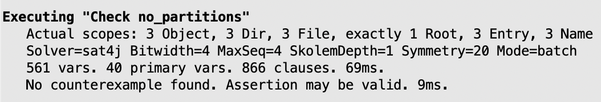
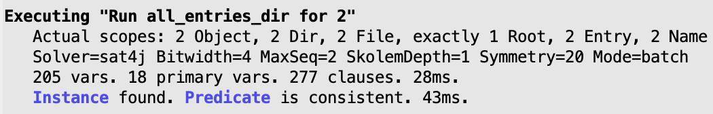

Commands in detail#
Commands are an essential feature of an Alloy model, since they are what
triggers the automatic analyses of our model by the Analyzer. There are two
types of commands in Alloy: run commands search for instances for which
certain constraints hold, while check commands search for
counter-examples for which certain constraints are broken. Commands also
determine the scope of the analyses, which determine the maximum size of the
signatures and the universe of discourse. In the main chapter
Structural modeling we’ve already seen the fundamentals of command
declaration. This chapter explores commands in more detail.
Alternative command shapes#
Both run and check commands can take two shapes. In the first
shape commands take an optional label and a constraint to be enforced/checked
between braces. Between the braces any arbitrary formula can be written. In the
main chapter we’ve defined run commands of this shape, but this could
also be done for check commands. For instance, below is a
check command equivalent to the one in the main chapter for the file
system example.
check check_no_partitions {
all o : Object | reachable[o]
} for 6
The second shape cannot be labelled and just calls a re-usable formula defined
elsewhere. For check commands we’ve already seen in the main chapter
that is done through the definition of assert formulas; the
check command will search for counter-examples that break that
assertion. For run commands, they can be instructed to generate
instances for which a certain pred holds. An advantage of these
versions is that they ease the definition of multiple commands for the same
property with different scopes. For instance, let’s say that we want to explore
instances that have a file hierarchy of at least depth 2 but with different
content. We could do something like the following.
pred depth2 {
some Root.entries.object.entries.object
}
run depth2 for 4 but 0 File
run depth2 for 4 but 1 File
run depth2 for 4 but 2 File
An interesting feature of this kind of commands is that, if you run a
predicate with parameters, they will be automatically quantified and show an
instance for which there is some atom that makes the predicate true. For
instance, let us define a predicate that tests whether a directory is empty, and
then ask for instances where there is some empty directory.
pred empty_dir [d: Dir] {
no d.entries
}
run empty_dir for 3
This will result in instances such as the one below. Notice that there is now a
subset $empty_dir_d in the instances, identifying the quantified
variable that made predicate empty_dir true. This is because the
Analyzer performs a process called Skolemization whenever outermost
existential quantifications occur in run commands (or universal
quantifications for check commands), which solves those variables by
creating additional free relations to represent them. This largely improves the
efficiency of the analysis procedures, and as a side-effect such relations are
now also part of the generated instance.

Although less common, run commands can also call a fun rather
than a pred. In that case Alloy will search for variable for which the
function is well defined (i.e., it returns a value within its return type).
Note that once you specify a constraint in the command, you are no longer
calling an assertion or predicate and just labelling the command. Since commands
can have the same label as predicates, this can sometime lead to confusions. For
instance, the command below is not really checking assertion
no_partitions, but instead the empty constraint within brackets (which
is equivalent to true and never finds any counter-example, possibly leading the
distracted user to a false sense of confidence).
check no_partitions {}
Controlling scopes#
When the Analyzer is launched, a non-negative scope must be assigned to every signature of the model that determines the maximum number of atom for that signature. These scopes are declared in the analysis commands.
The overall scope of a command is specified with the keyword for which
is applied to all top-level signatures. If omitted, a default overall scope of 3
is used. Since overall scopes apply only to top-level signatures, they may have
some unintended results when the signature hierarchy becomes more complex, in
particular when singleton signatures are introduced and consume part of the
scope of a top-level signature. For instance, in our running example, a command
with a overall scope of 3 like the one below will never generate instances with
3 files. This is because the scope for Object is 3, but one of those
atoms is the Root, so only 2 atoms are free to become files or non-root
directories.
run scope_3 {} for 3
After the overall scope, we can assign additional scopes to specific top-level
and extension sub-signatures that override the overall scope (you cannot assign
scopes to subset signatures). These additional scopes are declared after the
overall scope with a keyword but and separated by commas. For instance,
the following command overrides the overall scope for signature Name.
run names_2 {} for 3 but 2 Name
If you declare a scope for a specific signature that conflicts with its
multiplicity constraint, you’ll get an error. Namely, one signatures
must have scope 1, lone signatures scope less than or equal to 1, and
some signatures greater than 0. Also, you can never declare a scope for
an enumeration signature.
In general, assigning a specific scope to a signature does not affect the scope
of its parent nor its siblings. There is however on exception, and that is when
the parent signature is marked as abstract. In this case, if the
abstract signature is not assigned a specific scope, but all of its
sub-signatures are, the scope of the parent is increased to accommodate that of
its sub-signatures. For instance, in the following command, the scope of
Object is actually increased to 6, because no specific scope was
assigned that abstract signature.
run files_3_dirs_3 {} for 3 but 3 Dir, 3 File
Note that this only happens if all sub-signatures are assigned a specific scope.
Moreover, there is another corner case implemented in calculating the scope of
abstract signatures: if all sub-signatures are assigned a specific scope except
one, then that one gets the scope remaining from the abstract parent signature,
which is not increased. This may have unexpected consequences. For instance, the
following command yields no instance, because there is a single sub-signature of
Object without specific scope assigned, File, so it gets what
remains of the scope on Object minus the scope on Dir, which is
0.
run dirs_3 { some File } for 3 but 3 Dir
The actual scopes being used by the Analyzer can be consulted in the information reported by the Analyzer. For instance, for the two commands above, the following information would be reported by default.
{kind=link}
More information about how these scopes were calculated is provided if the logging verbosity is increased through menu option .
If you assign a specific scope for every top-level signature of the model, you can actually omit the overall scope; otherwise, an error is thrown. For instance, the following command is valid in our running example.
run no_overall {} for 3 Object, 2 Name, 2 Entry
All scopes considered until now impose an upper-bound on the number of atoms.
Specific signature scopes can also be marked with keyword exactly,
which forces them to contain exactly that amount of atoms. For instance, the
following command guarantees that there exist exactly 2 files in every instance.
run files_exact2 {} for 3 but exactly 2 File
All the rules stated above for increasing/decreasing scopes when the parent
signature is abstract still apply to exact scopes (so the scope on File
is reduced to 1). And if you write a command such as the following, it will be
unsatisfiable, because the scope on Object is not incremented.
run files_exact4 {} for 3 but exactly 4 File
Todo
should we talk about growing scopes? it’s not documented anywhere, but it’s implemented
Dealing with expected outcomes#
A complex model often contains several run and check commands.
Sometimes we want to encode negative run commands to show that a certain
class is instances is disallowed, or invalid check commands to register
some known issues. We could use comments to annotate which is the case, but
Alloy allows the user to register what is the expected outcome of a command
using a keyword expect after the scope declaration. The expectation is
that the command is either satisfiable (1) or unsatisfiable (0). A command is
satisfiable when it is able to generate an instance. So a run command that
yields instances is satisfiable, and a valid check command that finds no
counter-examples is unsatisfiable. When executing such commands, the Analyzer
will inform the user whether the result was the expected.
Let us recall the development of our file system example in the main chapter
Structural modeling. Let us say that, for demonstration purposes we want
to be able execute the invalid version of the no_partitions assertion
that we encountered when the incorrect fact no_self_containment was
enforced rather than the stronger, fixed no_indirect_containment. This
would require those constraints to no longer be enforced as a fact (which would
apply to all commands), but as a predicate that is only enforced in the
appropriate command. Likewise, we won’t be able to use a single assert
since we now have two distinct properties to check. A possibility is to encode
them as follows.
pred no_self_containment {
// Directories cannot contain themselves
all d : Dir | d not in d.entries.object
}
pred no_indirect_containment {
// Directories cannot contain themselves directly or indirectly
all d : Dir | d not in descendants[d]
}
pred no_partitions {
// Every object is reachable from the root
all o : Object | reachable[o]
}
Then we can call the appropriate restriction as a premise to checking
no_partitions. This would be done as follows.
check bad_containment {
no_self_containment implies no_partitions
} for 6 expect 1
check good_containment {
no_indirect_containment implies no_partitions
} for 6 expect 0
The first command is expected to generate a counter-example, but not the second one, as stated by the expected outcome. After execution, the Analyzer would report the results as follows.
{kind=link}
One last important note about the expect keyword: as can be seen in the
log above, when a command is expected to be satisfiable, the symmetry breaking
procedure is turned off, so similar instances will be generated by the Analyzer.
Warning
@nuno: why was this ever implemented??